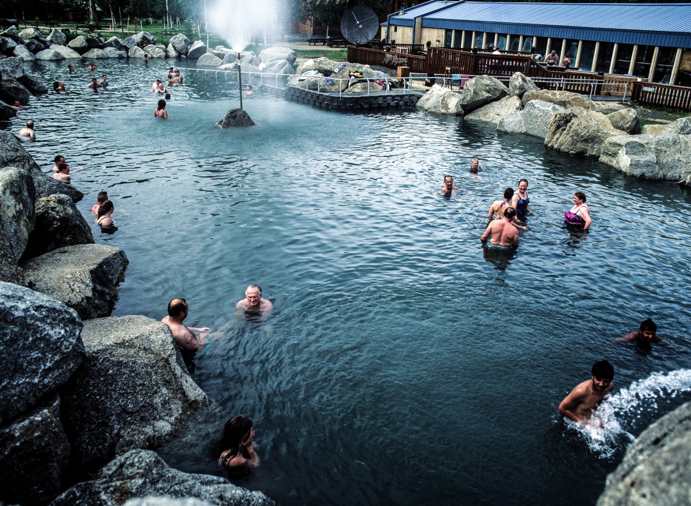
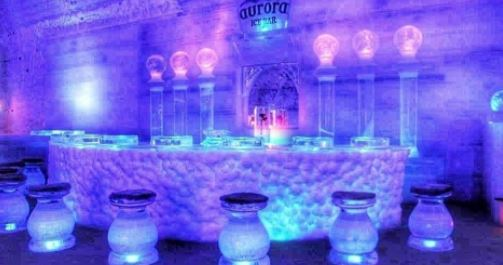

The Chena Hot Springs Resort
The Chena Hot Springs is located in Fairbanks that is well known for its magnificent hot springs and also exclusive private resort. From Mile 26 - Mile 51, drivers can go through the Chena River State Recreation Area, which is a 397-square-mile reserve that consists of the Chena River valley as well as neighboring alpine areas. The recreation area offers several of the best hiking, public-use cabins, canoeing, as well as angling in the location.
Although there are year-round citizens in the location, Chena Hot Springs is privately owned, it is roughly 440 acres, and a year-round family resort. Gold miners found the springs in the year 1905 and by the year 1912 Chena Hot Springs was the premier location for locals have a soak in the thriving community of Fairbanks.
Activities available
As stated above, there are many activities that are available at the Chena hot spring resort. Here are some of the ones you should try.
Activities will be broken down into the months or seasons they are most popular.
Year Round Activities
- Aurora Ice Museum Tour 
- Ice glass served Appletini in the ice bar
- Open everyday all year round
- There is a ice chapel that allows you to renew or plan a wedding.
- $ hotel rooms available in the ice museum.
- Great lighting around the museum
- Chena Kennel Tour
Fees
| Adults Ages 12+ | $15 |
| Adults Ages 21+ | $30 |
| Children Ages 6 to 11 | $10 |
The Chena Hot Springs Resort is known to have the biggest year-round ice tour, the Aurora Ice Museum! It was produced from tons of ice and also snow, all gathered from the resort. The museum was finished in January 2005 and remains at an awesome 25° Fahrenheit (-7 ° Celsius).. Maintaining the museums icy cold temperature in the warm of summer season originates from the absorption chiller that is patented.
The Aurora Ice Museum Tour usually lasts for 45 mins, beginning at the activity center 5 mins prior to your scenic tour time. A guide will go over everything you need to know before taking you on the full tour. You can join others at the ice bar as well as enjoy your pre-purchased Appletini that is delicately served in a popular ice glass.
Highlights of the Aurora Ice Museum Tour
What to bring
You should bring a warm pair of gloves and hat. You should also bring a valid id.
The Chena Kennel Tour last 40 minutes and will allow you to meet some amazing Alaskan huskies and learn all there is to know about the breed. The kennel here has over 50 dogs and you will get to see them all while on the tour.
Fees| Adults Ages 12+ | $20 |
| Children Ages 6 to 11 | $10 |
How hot is the water at Chena Hot Springs?
THe Chena Hot Springs get supplied by spring water of about 150 degrees. The hot spring that is located at the winter wonderland has 2 hot springs. The indoor pool has an average temperature of 90 degrees F. The outdoor pool averages around 106 degrees F.
How much does Chena Hot Springs cost?
The Chena Hot Springs has great prices.
| Chena Hot Springs (Pool) | Cost of Admission | ||
|---|---|---|---|
| Age (In Years) | Price of Daily Swim Pass | No charge for those staying at the Resort | |
| Under 6 | Free | ||
| 6 - 17 | $12.00 | ||
| 18 - 59 | $15.00 | ||
| 60+ | $13.00 | ||
| Family Swim Pass | 10 Swims | $100.00 |
What do you wear to Chena Hot Springs?
You should wear the proper clothing when you visit the chena hot spring. Here are some things you will need to bring to make your life easier.
- Towel
- Shower Shoes
- Water
You never want to exit a hot spring or even a pool and not have a towel to dry yourself after. Bring a towel with you so you won't have to buy one while visiting.
I never liked the idea of walking around any locker room without shoes. To visit the locker room, you will have to take off your shoes. To keep your feet protected, bring shower shoes.
After relaxing in the hot springs, you might be dehydrated. You will need to get some fluid in your system.
Can you swim in Chena Hot Springs?
Yes, you can swim in the chena hot springs. The public is welcomed to enjoy the pools and hot springs along with a variety of other activities that are available.
Is Chena Hot Springs safe?
The chena hot springs is very safe. The pools that are indoors are chlorinated geothermal water. This chlorinated geothermal water kills all the bacteria that might have been present.
Subscribe
Stay updated with our newsletter
Conclusion
The Chena Hot Springs is a great place to visit. Take your whole family for a quiet getaway or just go by yourself to get rid of stress.